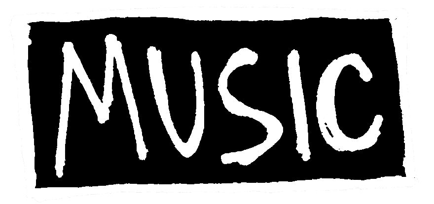
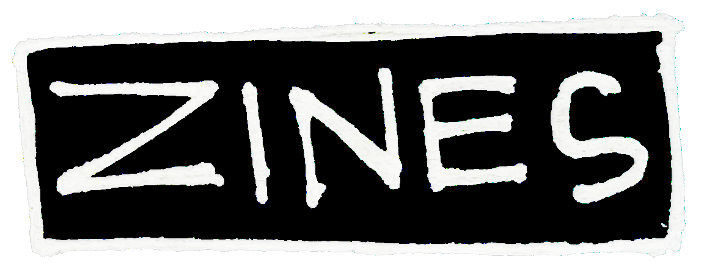
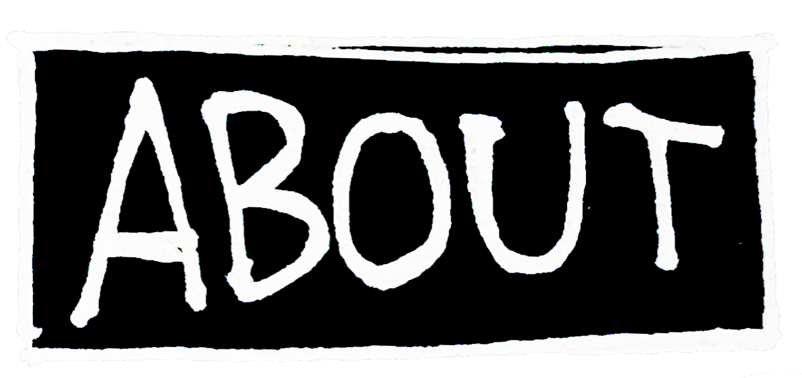
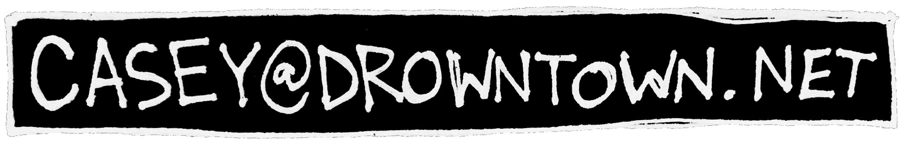
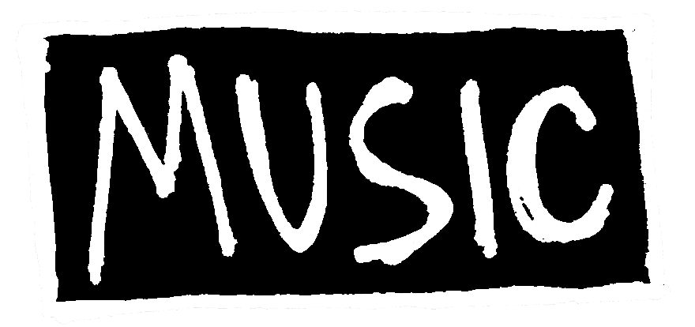
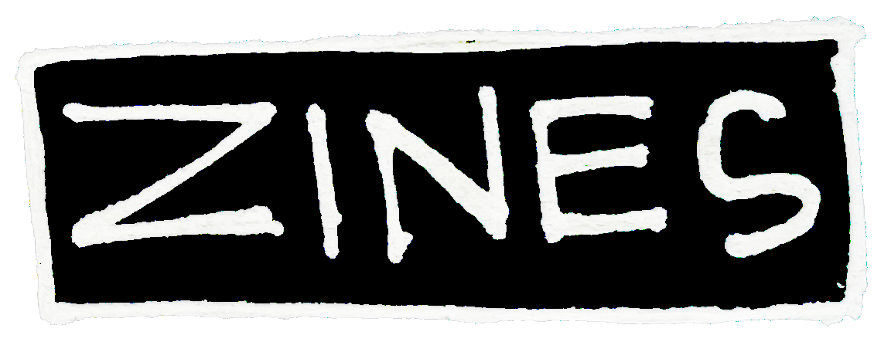
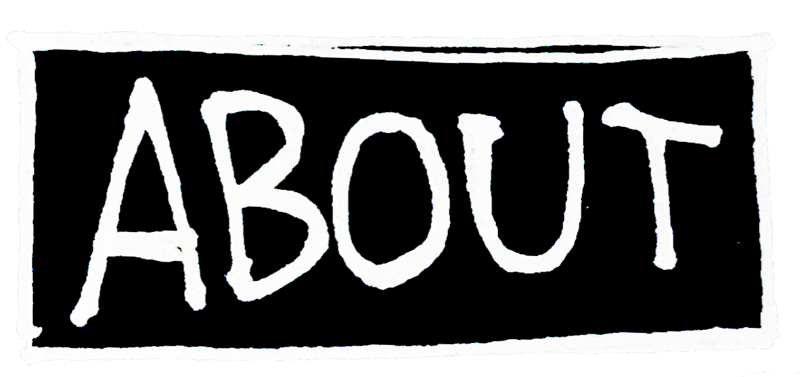
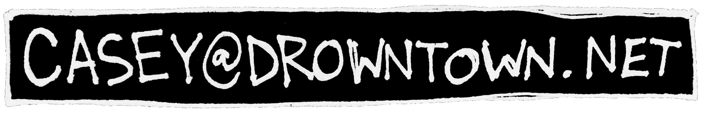
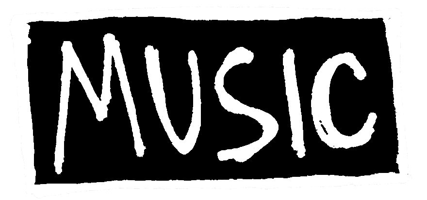
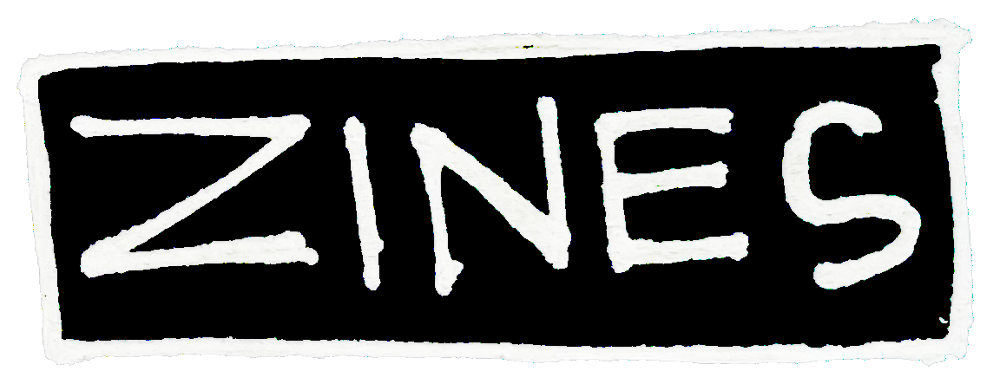
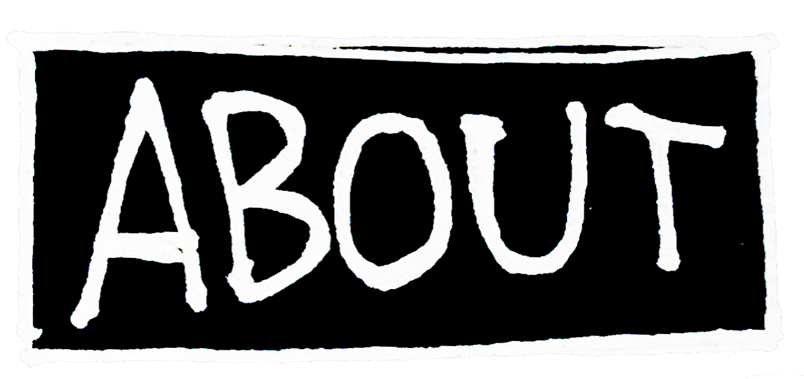
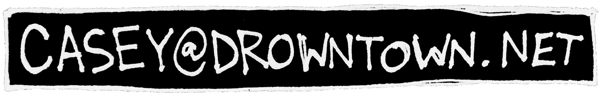
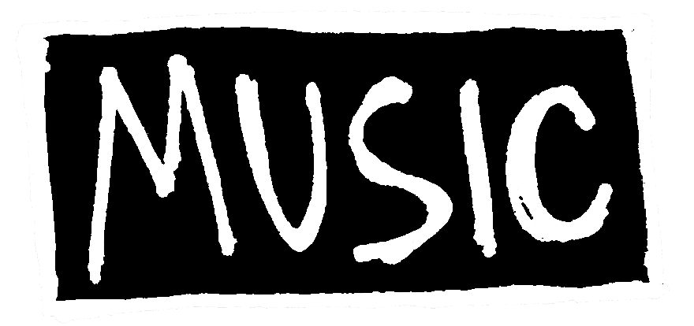
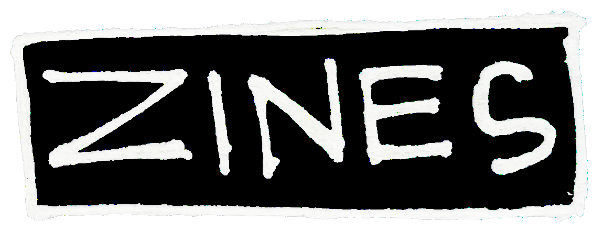
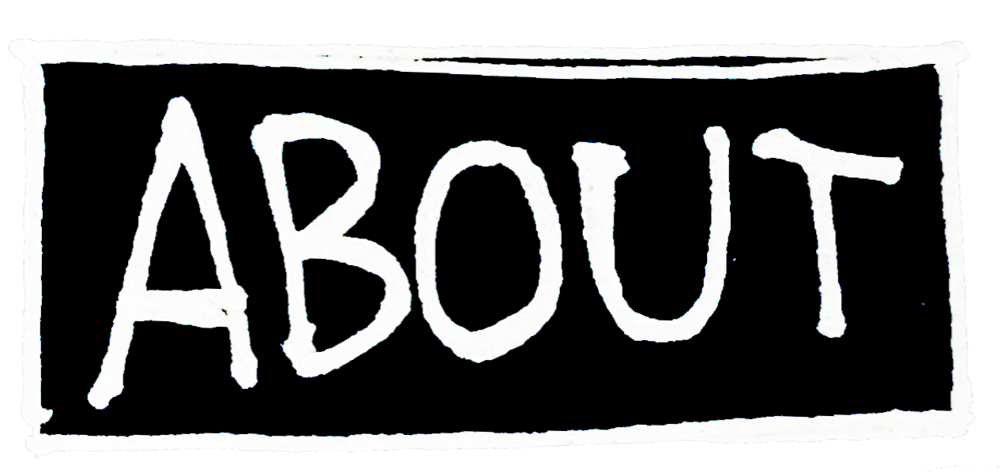
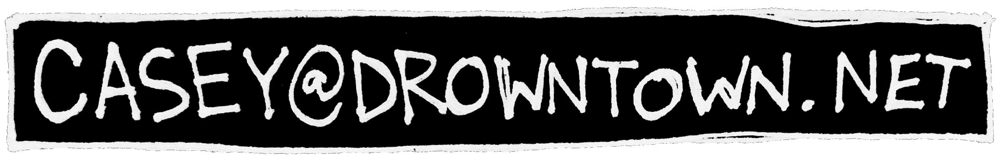
drowntown.net changes once again..
added tabs for my music and my zines, also a button if you wanted to email me. if anybody out there actually emails i'd like to do a page for YR EMAILS! where i'll answer questions or just put up whatever stuff you people out in the ether send me. on the topic of music, tapes (maybe CDs) will be available after i finish the material i'm working on and get it all recorded, also cheap ass (3 dollar??) patches and random DIY junk will go up for sale because i like when artists do that so i'm gonna do it too
also come on, i know you aren't reading this LMFAO
first issue of SOMETHING SOMETHING MAGAZINE is up! this was souper fun to make so i'll probably do more, which will be posted to this site
(btw you can click the images to go to the zines page)i like having the basic website of doom and impermanence. everything changes here, and in a way it's always the same.
hosting SOMETHING SOMETHING MAGAZINE
asleep at the wheel since 2025
"doesn't it feel like we're always going under?"
©2025 drowntown.net all rights reserved.